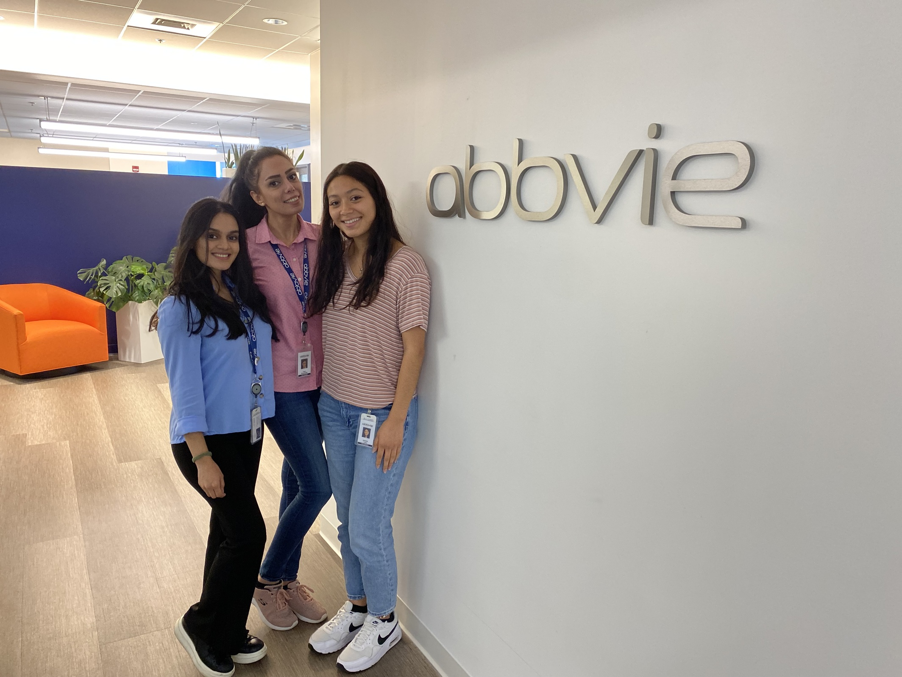
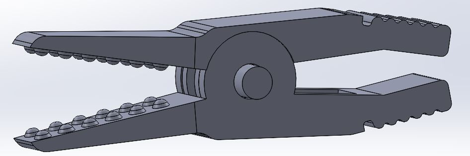
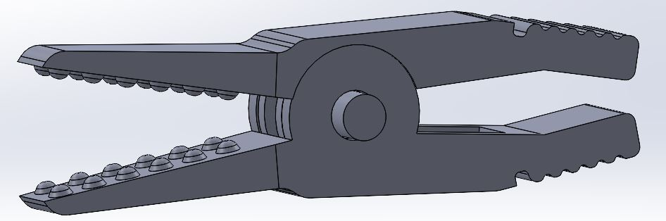

Isabella Lopez
Isabella Lopez is a fourth-year undergraduate bioengineer student with a passion for finding innovative solutions to some of the world's most pressing health issues. She grew up in Southern California, where she was always fascinated by science and technology. Her parents encouraged her curiosity by taking her to science museums and science fairs, which further ignited her love for science.
As Isabella progressed through her high school years, she became more interested in biology and mathematics. After extensive research, she decided to pursue a degree in bioengineering. She was accepted into the University of California, Riverside for bioengineering and was thrilled to start her college journey.
Isabella’s freshman year was an exciting time for her. She immersed herself in her coursework and she quickly discovered that bioengineering was a field that combined her love of biology, mathematics, and technology, and was eager to learn more. In her sophomore year, Isabella began to take more specialized courses in bioengineering. She was fascinated by the different areas of study, including tissue engineering, biomaterials, and biomechanics. Sarah realized that she wanted to focus on tissue engineering and started to explore research opportunities.
Isabella joined a research group at her university that was focused on developing novel 3D biomaterials with mesoscale pore structures for tissue engineering. She worked closely with the team and learned about the process of designing and fabricating fibers, as well as testing their properties. She was able to contribute to the project by designing and executing experiments and presenting her findings at the Southern California Conferences of Undergraduate Research in November 2022.
Isabella's dedication and hard work paid off when she was offered a summer internship at AbbVie, a leading pharmaceutical company. She worked on developing gene-edited mice models using CRISPR technology. She was able to apply her skills and knowledge from her previous research experience to the project and made significant contributions. The internship gave her a taste of working in the biotechnology industry and confirmed her passion for bioengineering.
In her senior year, Isabella is taking on her most significant challenge yet. She is working on developing a miniaturized transcutaneous vagal nerve stimulator for the purpose of using it to reduce necrotizing enterocolitis. The project is complex and involves designing a device that can send electrical pulses through the vagal nerve endings of the ear. Sarah is working with fellow peers and a team of researchers and clinicians to ensure that the device meets the necessary criteria.
Outside of her academic pursuits, Isabella volunteers as a mentor for other college students who are interested in pursuing a career in STEM. As Isabella looks toward graduation, she is excited about the opportunities that lie ahead. She plans on continuing her education at the University of California, Berkeley where she will pursue a Master of Engineering. She is grateful for the support of her family, friends, and mentors who have helped her along the way, and is excited to see where her passion for bioengineering will take her.
Experience
Undergraduate Research Assistant
• Supports material research of polymers building fibers, conducts lab work, & develop formulations
• Builds microfluidic device prototypes & operates test equipment
• Assists in cell culture experiments and analyze cell culturing data
Research Assistant Intern
• Handled and tagged animals
• Performed primary cell isolation, specifically with bone marrow
• Learned molecular biology techniques, such as BCA assay, Western blot, bacterial cell transformation
Manufacturing Engineering Intern
• Designed a poster and manual for empolyees in the factory about how to use and read calipers and micrometers
• Created an excel spread sheet that performed calculations of how much resin and product to input into the machines when fabricating plastic packaging
• Learned how to utilized SolidWorks and Draftsight to make parts of machinery and draw out plastic packaging designs
Education
UC Riverside
Portfolio



.jpg)
© John Doe
